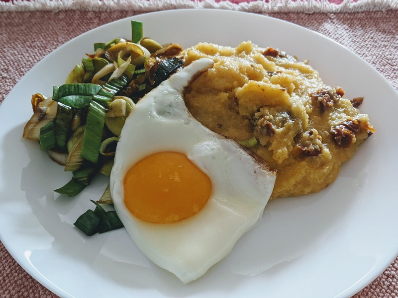

Tak jsem zase pro jednou zalovila ve vodách zdravých receptů z Bioabecedáře. Ne vždy se u všech mých strávníků shledají s ohlasem :-D, ale tento je zrovna docela fajn a uložím si ho sem minimálně pro ty dny, kdy vařím jen sama pro sebe.
- 0,5kg kukuřičné biokrupice (množství dolaďte dle počtu strávníků, já dávám míň)
- 2l vody
- 2 malé lžičky mořské soli
- 100ml panenského olivového oleje
- 150g sušených rajčat
- 1-2 velké pórky
- kousek čerstvého oloupaného zázvoru
- 3-4 stroužky česneku
- mořská sůl
- sójová omáčka Shoyu nebo Tamari
- (bio)vejce
Do vroucí vody přidáme sůl a trochu olivového oleje a postupně pomalu přisypáváme za stálého míchání polentu. Snížíme oheň na minimum a vaříme do zhoustnutí. Do uvařené kukuřičné kaše vmícháme na malé kousky nakrájená sušená rajčátka a olivový olej, dle chuti můžeme ještě dosolit či přidat kousek másla. Polentu je možno takto servírovat buď hned a nebo ji přelít do pekáče předem vypláchnutého studenou vodou a nechat vychladnout. Vychladnutá se pak dá libovolně rozkrájet a opéct na pánvi s olivovým olejem do křupava.
Na pánvi orestujeme česnek a zázvor nakrájený na malinké kostičky a na šikmo nakrájenou bílou část pórku. Nakonec přidáme i podobně nakrájenou zelenou část pórku a dle chuti sójovou omáčku. Osolíme a společně chvíli opékáme. Podáváme s volským okem.
